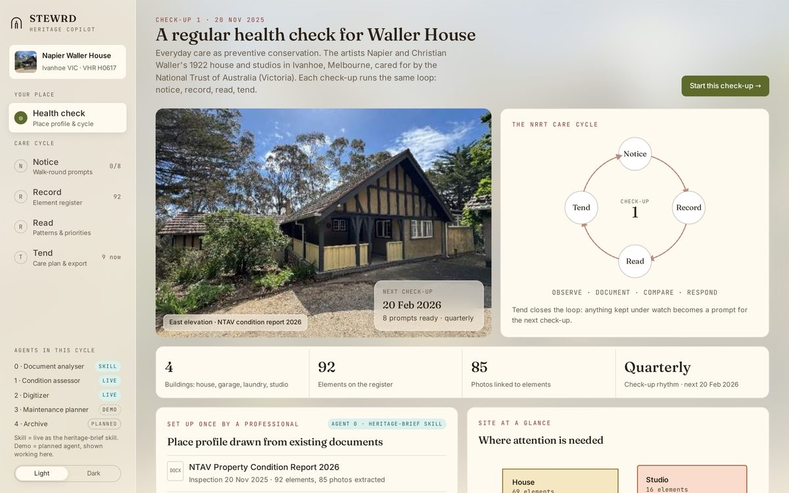

We're building these tools and sharing them as we go. Try them, use them on your property, and let us know what works — and what doesn't.
Built around one care cycle: Notice → Record → Read → Tend, then back to Notice at your next check-up.

Walk through one check-up of a real heritage house: the walk-round, recording each element, the priority list and a care plan. It shows where STEWRD is heading, with all the agents working together.
Defects, works and photos from the National Trust of Australia (Victoria) Property Condition Report 2026. Condition grades and priorities are illustrative, and assessor results in the demo were prepared in advance.